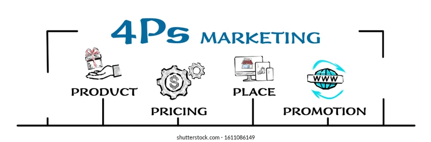

The objective of this project is to perform data cleaning of housing data using SQL. The project involves importing a CSV file into SQL Server, handling issues related to date and address columns, and managing null values. This project showcases how to use SQL for data cleaning and manipulation and how to handle common data issues.


This project focuses on exploring COVID-19 data of multiple countries by joining COVID death and vaccination tables. The project calculates infection rates, death rates, and vaccination rates for various countries. In addition, temporary tables are used for intermediate processing steps. This project demonstrates how to use SQL for data exploration and analysis, as well as how to join and analyze data from multiple tables.
Designed a database for a food ordering system consisting of 10 normalized tables, including customers, orders, items, and ingredients. I utilized views, joins, and subqueries to create various reports, such as sales analysis, inventory management, and staff cost analysis. These features enhance the system's efficiency and enable better decision-making for the business.
The interactive dashboard displays insights on content distribution by country, ratings, genres, and year. It includes an interactive filter for titles, displaying their ratings, duration, release year, genre, and description. The dashboard provides an easy-to-use and comprehensive overview of Netflix content data.

Analyzed Airbnb listings and calendar data using Tableau Cloud to create interactive visualizations and dashboards. The project used joins to combine multiple datasets and provide insights into listing availability, pricing, and location. The project will facilitate informed decision-making and support business growth strategies.

With Python, this project scrapes real-time data from Amazon for a product's title, price, and rating, and stores it locally in a CSV file for future reference. Furthermore, the project incorporates a Gmail alert system to notify users when the price of the product drops below a predetermined threshold. This feature enables users to stay up-to-date with pricing changes, which can assist them in making informed purchasing decisions.
This project involved analyzing a dataset of 7600 movies to explore relationship between budget, votes, genre, company, director, and gross earnings. The data was cleaned and analyzed, revealing a positive correlation between budget and gross earnings, as well as between votes and gross earnings. This suggests that higher budget movies tend to generate higher gross earnings, potentially due to better marketing and production values.

The Dashboard project aims to provide insights into employee attrition by Department, Education field, Gender and Age group. It will also display the No of employees in each Age group and Job satisfaction across Job roles. The dashboard will assist in identifying attrition trends and help managers create strategies to improve retention rates and improve job satisfaction.

This project involved creating an interactive data dashboard that explored the relationship between various factors such as gender, marital status, income, education, occupation, commute distance, age, and bike purchase status. The dashboard allowed users to visualize and analyze the data in an intuitive way, providing insights into the factors that influence bike purchasing decisions.

This project identified crucial features for designing a mobile phone, determined the most profitable products to bundle with it, and set an optimal price point. The project found the best distribution channels and crafted a media plan for maximum exposure at the lowest cost using Advanced Excel and R. This project helped in developing a comprehensive product and marketing strategy for the mobile phone.
The aim of this project is to design a comprehensive retail strategy for VDECORE, a fictional digital native vertical furniture brand. The strategy will cover various aspects of retail operations, including consumer insights, network planning, store location, store format, manning requirements, store layout, visual merchandising and loyalty program. The project also assessed IT systems requirements and E-tailing capabilities, resulting in increased customer engagement and business growth.